|
MODFLOW 6
version 6.4.0
MODFLOW 6 Code Documentation
|
|
MODFLOW 6
version 6.4.0
MODFLOW 6 Code Documentation
|
This module contains stateless sfr subroutines and functions. More...
Functions/Subroutines | |
| real(dp) function, public | get_saturated_topwidth (npts, stations) |
| Calculate the saturated top width for a reach. More... | |
| real(dp) function, public | get_wetted_topwidth (npts, stations, heights, d) |
| Calculate the wetted top width for a reach. More... | |
| real(dp) function, public | get_wetted_perimeter (npts, stations, heights, d) |
| Calculate the wetted perimeter for a reach. More... | |
| real(dp) function, public | get_cross_section_area (npts, stations, heights, d) |
| Calculate the cross-sectional area for a reach. More... | |
| real(dp) function, public | get_hydraulic_radius (npts, stations, heights, d) |
| Calculate the hydraulic radius for a reach. More... | |
| real(dp) function, public | get_mannings_section (npts, stations, heights, roughfracs, roughness, conv_fact, slope, d) |
| Calculate the manning's discharge for a reach. More... | |
| subroutine | get_wetted_perimeters (npts, stations, heights, d, p) |
| Calculate the wetted perimeters for each line segment. More... | |
| subroutine | get_cross_section_areas (npts, stations, heights, d, a) |
| Calculate the cross-sectional areas for each line segment. More... | |
| subroutine | get_wetted_topwidths (npts, stations, heights, d, w) |
| Calculate the wetted top widths for each line segment. More... | |
| pure subroutine | get_wetted_station (x0, x1, d0, d1, dmax, dmin, d) |
| Calculate the station values for the wetted portion of the cross-section. More... | |
This module contains the functions to calculate the wetted perimeter and cross-sectional area for a reach cross-section that are used in the streamflow routing (SFR) package. It also contains subroutines to calculate the wetted perimeter and cross-sectional area for each line segment in the cross-section. This module does not depend on the SFR package.
| real(dp) function, public gwfsfrcrosssectionutilsmodule::get_cross_section_area | ( | integer(i4b), intent(in) | npts, |
| real(dp), dimension(npts), intent(in) | stations, | ||
| real(dp), dimension(npts), intent(in) | heights, | ||
| real(dp), intent(in) | d | ||
| ) |
Function to calculate the cross-sectional area for a reach using the cross-section station-height data given a passed depth.
| [in] | npts | number of station-height data for a reach |
| [in] | stations | cross-section station distances (x-distance) |
| [in] | heights | cross-section height data |
| [in] | d | depth to evaluate cross-section |
Definition at line 126 of file SfrCrossSectionUtils.f90.
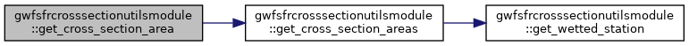
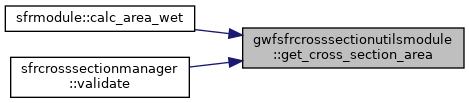
|
private |
Subroutine to calculate the cross-sectional area for each line segment that defines the reach using the cross-section station-height data given a passed depth.
| [in] | npts | number of station-height data for a reach |
| [in] | stations | cross-section station distances (x-distance) |
| [in] | heights | cross-section height data |
| [in] | d | depth to evaluate cross-section |
| [in,out] | a | cross-sectional area for each line segment |
Definition at line 343 of file SfrCrossSectionUtils.f90.
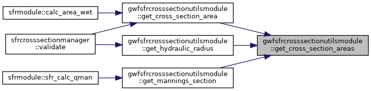
| real(dp) function, public gwfsfrcrosssectionutilsmodule::get_hydraulic_radius | ( | integer(i4b), intent(in) | npts, |
| real(dp), dimension(npts), intent(in) | stations, | ||
| real(dp), dimension(npts), intent(in) | heights, | ||
| real(dp), intent(in) | d | ||
| ) |
Function to calculate the hydraulic radius for a reach using the cross-section station-height data given a passed depth.
| [in] | npts | number of station-height data for a reach |
| [in] | stations | cross-section station distances (x-distance) |
| [in] | heights | cross-section height data |
| [in] | d | depth to evaluate cross-section |
Definition at line 159 of file SfrCrossSectionUtils.f90.
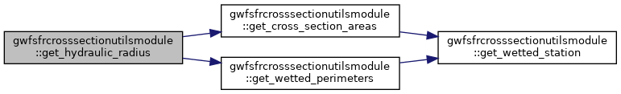
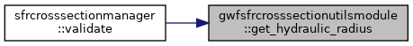
| real(dp) function, public gwfsfrcrosssectionutilsmodule::get_mannings_section | ( | integer(i4b), intent(in) | npts, |
| real(dp), dimension(npts), intent(in) | stations, | ||
| real(dp), dimension(npts), intent(in) | heights, | ||
| real(dp), dimension(npts), intent(in) | roughfracs, | ||
| real(dp), intent(in) | roughness, | ||
| real(dp), intent(in) | conv_fact, | ||
| real(dp), intent(in) | slope, | ||
| real(dp), intent(in) | d | ||
| ) |
Function to calculate the mannings discharge for a reach by calculating the discharge for each section, which can have a unique Manning's coefficient given a passed depth.
| [in] | npts | number of station-height data for a reach |
| [in] | stations | cross-section station distances (x-distance) |
| [in] | heights | cross-section height data |
| [in] | roughfracs | cross-section Mannings roughness fraction data |
| [in] | roughness | base reach roughness |
| [in] | conv_fact | unit conversion factor |
| [in] | slope | reach slope |
| [in] | d | depth to evaluate cross-section |
Definition at line 214 of file SfrCrossSectionUtils.f90.
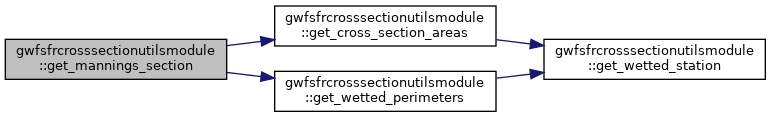
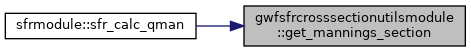
| real(dp) function, public gwfsfrcrosssectionutilsmodule::get_saturated_topwidth | ( | integer(i4b), intent(in) | npts, |
| real(dp), dimension(npts), intent(in) | stations | ||
| ) |
Function to calculate the maximum top width for a reach using the cross-section station data.
| [in] | npts | number of station-height data for a reach |
| [in] | stations | cross-section station distances (x-distance) |
Definition at line 35 of file SfrCrossSectionUtils.f90.
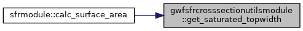
| real(dp) function, public gwfsfrcrosssectionutilsmodule::get_wetted_perimeter | ( | integer(i4b), intent(in) | npts, |
| real(dp), dimension(npts), intent(in) | stations, | ||
| real(dp), dimension(npts), intent(in) | heights, | ||
| real(dp), intent(in) | d | ||
| ) |
Function to calculate the wetted perimeter for a reach using the cross-section station-height data given a passed depth.
| [in] | npts | number of station-height data for a reach |
| [in] | stations | cross-section station distances (x-distance) |
| [in] | heights | cross-section height data |
| [in] | d | depth to evaluate cross-section |
Definition at line 93 of file SfrCrossSectionUtils.f90.
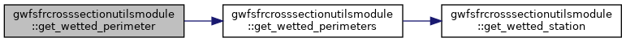
|
private |
Subroutine to calculate the wetted perimeter for each line segment that defines the reach using the cross-section station-height data given a passed depth.
| [in] | npts | number of station-height data for a reach |
| [in] | stations | cross-section station distances (x-distance) |
| [in] | heights | cross-section height data |
| [in] | d | depth to evaluate cross-section |
| [in,out] | p | wetted perimeter for each line segment |
Definition at line 280 of file SfrCrossSectionUtils.f90.
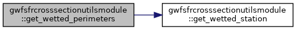
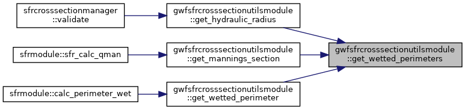
|
private |
Subroutine to calculate the station values that define the extent of the wetted portion of the cross section for a line segment. The left (x0) and right (x1) station positions are altered if the passed depth is less than the maximum line segment depth. If the line segment is dry the left and right station are equal. Otherwise the wetted station values are equal to the full line segment or smaller if the passed depth is less than the maximum line segment depth.
| [in,out] | x0 | left station position |
| [in,out] | x1 | right station position |
| [in] | d0 | depth at the left station |
| [in] | d1 | depth at the right station |
| [in,out] | dmax | maximum depth |
| [in,out] | dmin | minimum depth |
| [in] | d | depth to evaluate cross-section |
Definition at line 450 of file SfrCrossSectionUtils.f90.
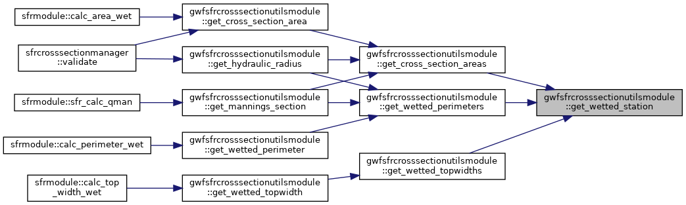
| real(dp) function, public gwfsfrcrosssectionutilsmodule::get_wetted_topwidth | ( | integer(i4b), intent(in) | npts, |
| real(dp), dimension(npts), intent(in) | stations, | ||
| real(dp), dimension(npts), intent(in) | heights, | ||
| real(dp), intent(in) | d | ||
| ) |
Function to calculate the wetted top width for a reach using the cross-section station-height data given a passed depth.
| [in] | npts | number of station-height data for a reach |
| [in] | stations | cross-section station distances (x-distance) |
| [in] | heights | cross-section height data |
| [in] | d | depth to evaluate cross-section |
Definition at line 60 of file SfrCrossSectionUtils.f90.
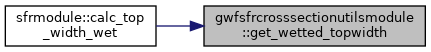
|
private |
Subroutine to calculate the wetted top width for each line segment that defines the reach using the cross-section station-height data given a passed depth.
| [in] | npts | number of station-height data for a reach |
| [in] | stations | cross-section station distances (x-distance) |
| [in] | heights | cross-section height data |
| [in] | d | depth to evaluate cross-section |
| [in,out] | w | wetted top widths for each line segment |
Definition at line 402 of file SfrCrossSectionUtils.f90.
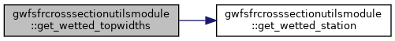
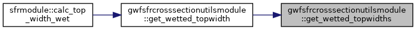
 1.8.17
1.8.17